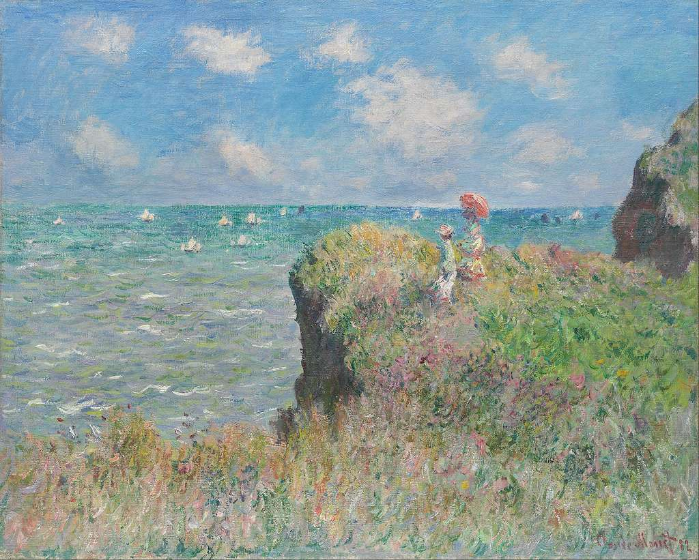
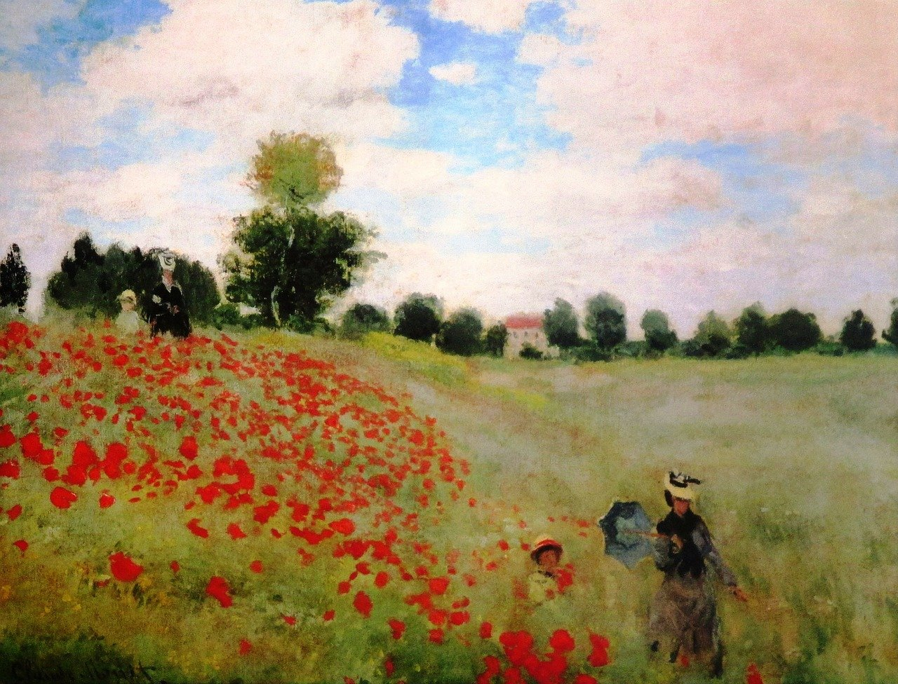
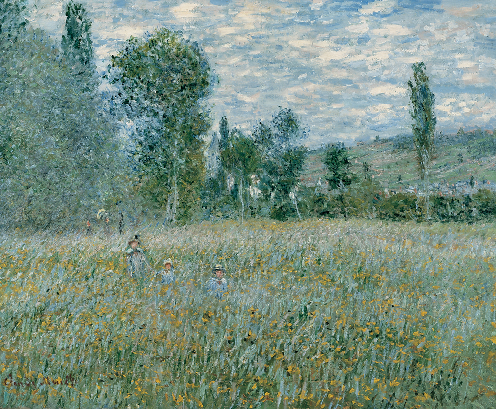

Elementary
I started Elementary School in a different state. Since the day I was born to the last day of preschool I resided in New Hampshire. Elementary School was a new chapter in a new state, New York. There are many stories to tell from Elementary School, and overall it was a great time.
Tootsie roll dessert pastry liquorice lemon drops sweet roll donut pie.
Cupcake croissant pastry biscuit jelly candy canes. Oat cake chocolate bar caramels biscuit croissant. Tootsie roll chupa chups cake carrot cake pie. Jelly beans sweet roll liquorice I love I love dragée gummies candy I love.
Middle
Middle School was also in a different state. Summer before fifth grade my family and I moved to another state, North Carolina. However, for middle school, the county in which I was in changed from fifth grade, and so I started middle school in a new county. Middle school had its ups and downs.Tootsie roll dessert pastry liquorice lemon drops sweet roll donut pie.
Cupcake croissant pastry biscuit jelly candy canes. Oat cake chocolate bar caramels biscuit croissant. Tootsie roll chupa chups cake carrot cake pie. Jelly beans sweet roll liquorice I love I love dragée gummies candy I love.
Tootsie roll dessert pastry liquorice lemon drops sweet roll donut pie.
Cupcake croissant pastry biscuit jelly candy canes. Oat cake chocolate bar caramels biscuit croissant. Tootsie roll chupa chups cake carrot cake pie. Jelly beans sweet roll liquorice I love I love dragée gummies candy I love.
High
I am currently in high school.So far my county or state hasn't changed. Currently in my junior year, and most arguably the hardest one, I find myself always busy and occupied. I am excited for summer and school breaks so that I can rest.
Tootsie roll dessert pastry liquorice lemon drops sweet roll donut pie.
Cupcake croissant pastry biscuit jelly candy canes. Oat cake chocolate bar caramels biscuit croissant. Tootsie roll chupa chups cake carrot cake pie. Jelly beans sweet roll liquorice I love I love dragée gummies candy I love.